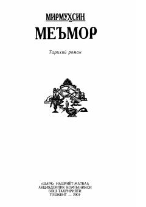

MXV asr Movarounnahr va Xurosonda me'morchilik san'ati tarixi haqidagi roman.
O'zbekiston xalq yozuvchisi Mirmuhsinning ushbu tarixiy romanida XV asrda Movarounnahr va Xurosonda me'morchilik san'atining rivoji, o'sha davr ziddiyatlari hamda me'mor Najmiddin Buxoriyning qizi Badia muhabbat hikoya qilinadi. Asarda tarixiy obidalar qurilishi va xalq qahramonliklari yorqin bo'yoqlarda tasvirlangan.